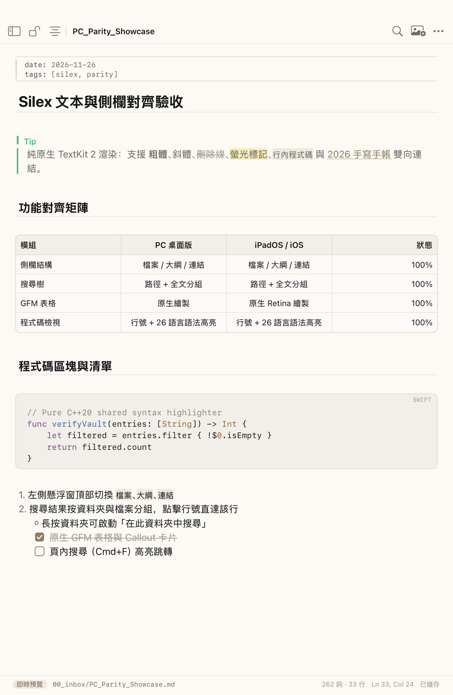
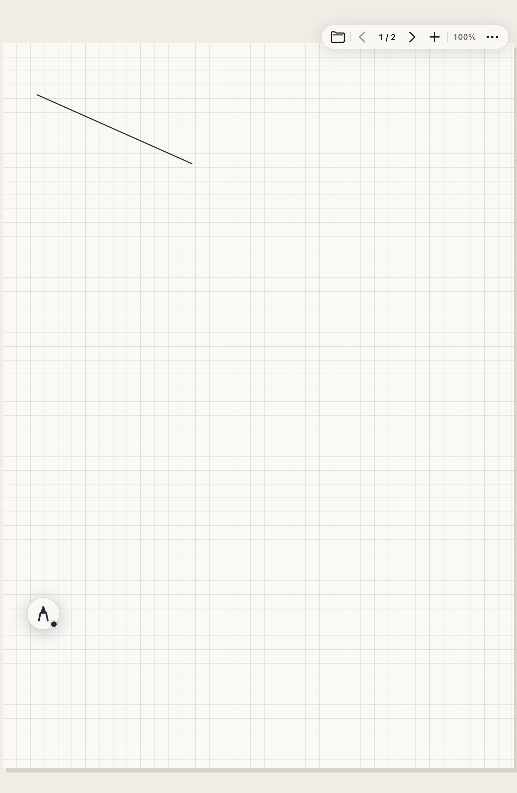

Local Markdown & Paper-Like Handwriting, Without the Cloud.
SilexNib unites fast native Markdown, Daily Notes, plain-text/PDF reading, physical page-by-page Apple Pencil notebooks, and zero-server LAN/Tailscale mTLS 1.3 sync across macOS, Linux, iPad, and iPhone.
離線本地 Markdown 與紙本手寫筆記，無需任何雲端。
SilexNib 結合純原生 Markdown 即時預覽、每日日記、程式碼與 PDF 檢視、Apple Pencil 實體分頁手寫筆記本，以及零伺服器 LAN / Tailscale mTLS 1.3 跨裝置同步，涵蓋 macOS、Linux、iPad 與 iPhone。
ローカル Markdown と紙の質感の手書きノートを、クラウドなしで。
SilexNib は C++20・Qt 6・UIKit / Metal による高速ネイティブ知識ベースです。Markdown ライブプレビュー、デイリーノート、PDF、ページ単位の手書きノート、サーバー不要の mTLS 1.3 同期を macOS・Linux・iPad・iPhone で提供します。
클라우드 없이 즐기는 로컬 Markdown과 종이 질감 필기 노트.
SilexNib는 macOS, Linux, iPad, iPhone을 위한 순수 네이티브 지식 저장소입니다. 라이브 프리뷰 Markdown, 데일리 노트, PDF, 페이지 단위 Apple Pencil 필기 노트, 서버 없는 LAN/Tailscale mTLS 1.3 동기화를 무료로 제공합니다.
Lokales Markdown & Handschrift-Notizbücher — ganz ohne Cloud.
SilexNib vereint natives Live-Preview-Markdown, Tagesnotizen, Code-/PDF-Ansicht, seitenbasierte Apple-Pencil-Notizbücher und serverlose mTLS-1.3-Synchronisierung (LAN / Tailscale) für macOS, Linux, iPad und iPhone.


Zero Electron & Zero Cloud
Compiled C++20 core shared across macOS, Linux, iPadOS, and iOS. Your notes live strictly as plain local files on your own devices.
Built-in mTLS 1.3 Sync
Direct peer-to-peer sync over LAN or Tailscale with QR fingerprint pinning, isolated per-vault state, and a mass-deletion black-hole circuit breaker.
Open Handwriting Protocol
ILP1 and *.snb/ are dedicated under CC0 1.0 Public Domain with vector PDF and Xournal++ (.xopp) export. Other apps are welcome to interoperate.